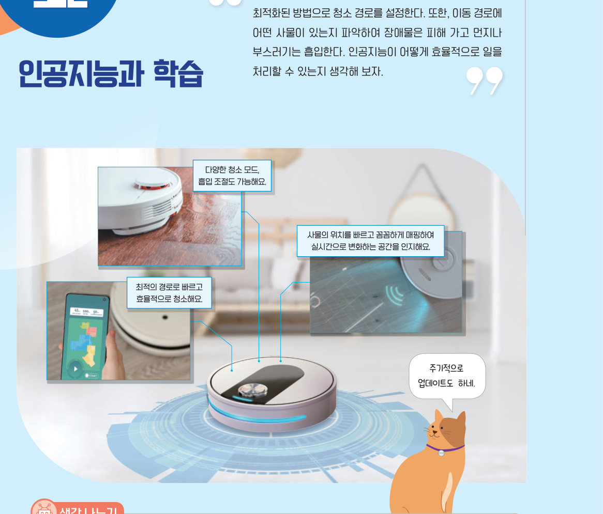
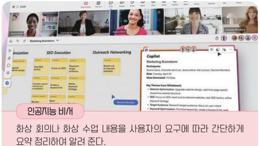
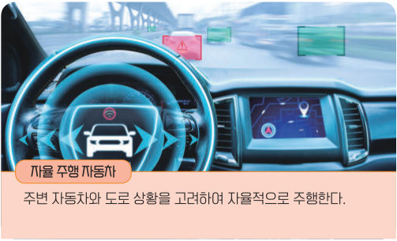
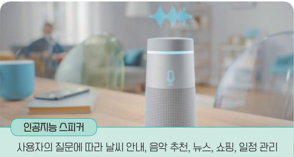
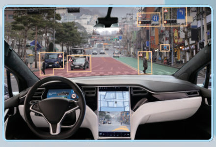
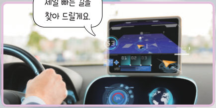
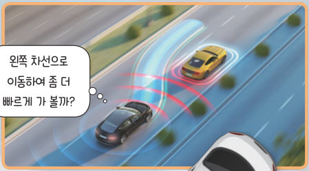

인공지능의
개념과 특성
얼굴로 잠금을 푸는 스마트폰, 기분에 맞는 음악을 고르는 스피커처럼 인공지능은 이미 생활 속에 있다. 자율 주행 자동차로 인공지능의 다섯 가지 특성을 살펴보고, 규칙대로만 움직이는 선풍기와 사용자를 학습하는 선풍기를 비교해 보자.

영화 속에 등장하는 인공지능은 사람의 언어를 이해하여 적절한 답변을 하며 사람의 요구를 빠르고 정확하게 처리한다. 최근에는 가전제품에도 인공지능이 탑재되어 음성 인식, 상황 판단을 통해 최적의 작업을 수행하기도 한다. 인공지능이란 인간이 하는 인식, 판단 등의 지능적 기능을 컴퓨팅 시스템이 수행할 수 있도록 하는 소프트웨어이다.



| ㉠ 화상 회의나 화상 수업 내용을 사용자의 요구에 따라 간단하게 요약 정리하여 알려 준다. | |
| ㉡ 주변 자동차와 도로 상황을 고려하여 자율적으로 주행한다. | |
| ㉢ 사용자의 질문에 따라 날씨 안내, 음악 추천, 뉴스, 쇼핑, 일정 관리 등의 일을 수행한다. | |
| ㉣ 질병을 빠르고 정확하게 감지하여 의사가 진단과 치료 계획을 세우는 데 도움을 준다. |
인공지능은 일반적으로 다음과 같은 특성이 있으며, 활용 목적에 따라 일부의 특성만 나타낼 수도 있다. 상황 인식 및 이해 센서로 주변 환경의 정보를 인지한다. 학습 데이터를 바탕으로 학습한다. 최적화 다양한 변수를 고려하고 판단하여 최적의 해를 찾는다. 예측 주변 상황이 어떻게 변할지 예측하고 대처 방법을 판단한다. 자율성 사람의 개입 없이 대응 방법과 행동을 스스로 결정한다.



| 라이다로 빛을 쏘아 사물의 형태, 거리, 속도를 360°로 감지한다. | |
| 많은 양의 주행 데이터를 학습하여 더 안전하고 정확하게 주행한다. | |
| 운전자의 습관을 분석해 운전자가 편안하게 느끼는 방식으로 최적의 주행 전략을 세운다. | |
| 차량 주변 사람의 행동을 미리 내다보고 속도를 줄인다. | |
| 운전자의 개입 없이 차량 간 안전한 간격을 유지하며 가속·감속한다. |
| 빛으로 사물의 형태, 원근감, 거리, 속도를 감지하며 주변 환경을 360°로 인식한다. | |
| 렌즈를 통해 신호등, 차량, 차선, 보행자 등 주변 사물을 구분한다. | |
| 전자기파를 송수신하여 전후방 물체의 거리와 속도, 방향을 파악한다. |
인공지능이 아닌 소프트웨어는 주변 상황을 고려하지 않고 미리 정의된 명령과 규칙에 따른다. 따라서 입력이 같다면 처리하는 데 걸리는 시간과 출력 결과는 항상 같다. 하지만 인공지능 소프트웨어는 인간의 지능 활동을 모방하여 학습 결과를 통해 의사 결정을 하거나 미래를 예측하는 데 활용된다. 주변 상황에 따라 다르게 반응할 수 있고, 지속적인 학습으로 성능을 개선할 수 있다. 따라서 입력이 같아도 다른 결과를 보여 주기도 한다.
| 사용자가 입력한 검색어가 포함된 도서 목록을 제시한다. | |
| 사용자의 도서 구매 이력을 분석하여 관심을 가질 만한 도서를 추천한다. | |
| 계산기에 같은 식을 넣으면 언제나 같은 답을 보여 준다. | |
| 사용자의 반응을 학습하여 바람 세기를 사용자에게 맞게 바꾼다. |
| 음성으로 바람의 세기나 작동 시간을 조절할 수 있다. | |
| 버튼을 누를 때마다 미풍, 약풍, 강풍, 끄기의 순서로 작동한다. | |
| ‘더워.’, ‘추워.’ 등의 사용자가 하는 말을 인식하여 작동한다. | |
| 센서로 온도를 감지하고 사용자가 설정한 온도에 맞게 작동한다. | |
| 특정 사용자를 인식하고 그 사람이 선호하는 바람 세기와 방향으로 작동한다. | |
| 리모컨의 전원을 누르면 선풍기가 작동한다. |
1인공지능의 개념
2인공지능의 특성
| 인공지능이 아닌 소프트웨어는 입력이 같다면 출력 결과가 항상 같다. | |
| 인공지능 소프트웨어는 같은 동작을 빠르고 정확하게 반복 수행하는 데에만 활용된다. |
| 평가 기준 | 스스로 평가 |
|---|---|
| 인공지능의 개념과 특성을 설명할 수 있는가? | |
| 인공지능 소프트웨어와 인공지능이 아닌 소프트웨어를 구분할 수 있는가? |